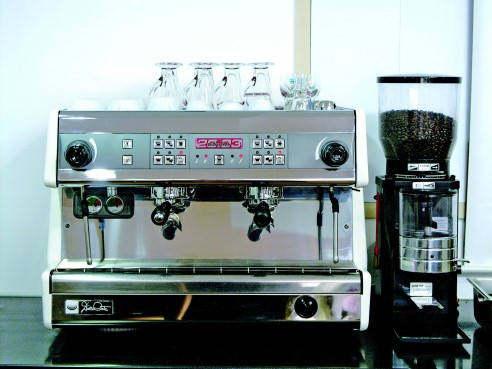

유리관 안에 분쇄된 커피를 담고 뜨거운 물을 부어준 다음 금속성 필터로 눌러 짜내는 수동식 추출방식. 커피가루를 끓인 물에 담가서 뽑아내는 방식으로 금속거름망이 달린 막대 손잡이와 유리그릇으로 구성돼 있다.
1.5mm 정도로 조금 굵게 분쇄한 커피가루를 포트에 넣고 물을 부어 저어준다. 그 다음 거름망이 달린 손잡이를 눌러 커피가루를 포트 밑으로 분리시킨 후 커피를 따라 마신다.
Hand Drip
가장 자연적인 방식. 중력의 원리를 이용해 뜨거운 물을 천천히 부어 추출하는 필터식 추출방식으로 ‘멜리타(Melitta Bentz)’라는 독일 여성이 개발했다.
깔때기 모양의 드립퍼는 여과지를 받쳐주는 받침대로 물이 원활하게 흐를 수 있도록 경사지게 만들고 홈을 판 형태다. 이 홈은 물길 역할을 하는 동시에 필터와 드립퍼가 밀착되어 커피액이 역침투하는 것을 방지해 준다.
드립퍼로는 강화 플라스틱 소재로 만든 제품이 많이 쓰인다. 도자기 제품도 있으나 깨지기 쉽고 가격도 상대적으로 비싸기 때문에 많이 사용하지는 않는다.
Vacuum Pot
증기의 압력, 물의 삼투압 현상을 이용해 추출하는 진공식 추출방식으로, 1840년 해양학자인 로버트 나피어(Robert Napier)에 의해 발명되었다. 커피의 맛이 깨끗하고 추출되는 과정이 아름답지만 시간이 많이 걸리고 번거롭기 때문에 국내에서는 널리 보급되지 못했다. 그럼에도 불구하고 커피애호가들이 한 번쯤은 해 보는 방식으로 일본을 거치면서 사이펀(Siphon)이라는 상표 이름으로 정착됐다.
버큠포트는 상하 두 부분으로 나뉜 구조이며, 그 사이에 윗부분에 고정된 필터가 있다. 물을 아래 부분에 담고 알코올램프로 천천히 가열하면 끓기 시작하면서 증기압과 삼투압에 의해 커피가루가 있는 위쪽으로 올라간다. 불을 끄면 커피물이 필터를 거쳐 아래로 내려오게 된다..
Mocha Pot
가열된 물에서 발생하는 수증기의 압력을 이용해서 추출하는 추출기구를 일컫는다. 증기압을 이용하기 때문에 비교적 쉽고 간단하게 에스프레소 방식에 가까운 커피맛을 낼 수 있다. 유럽에서는 흔하지만 국내에서는 마니아들만 아는 추출기구로 다양한 제품들이 유통되고 있다.
곱게 간 원두와 정수된 물을 포트에 채운 뒤 불 위에 놓고 끓이면 수증기가 원두를 통과하면서 에스프레소 원액이 추출된다. 수증기가 오일성분까지 씻어내리기 때문에 여과지가 있는 커피메이커와는 다른 지용성 향이 나온다. 다소 거칠지만 고전적인 맛을 즐길 수 있다.
Mocha Pot
보일러의 압력과 모터를 이용, 빠른 시간에 추출하는 현대식 추출방식이다. 현대 과학의 결정체라고 일컬어지는 커피머신의 발명과 발달은 에스프레소 커피가 현대식 커피의 대명사로 떠오르는데 결정적인 역할을 담당하고 있다. 이로 말미암아 커피사업자들은 커피의 경제적 부가가치를 한층 더 높일 수 있는 발판을 마련했으며, 소비자들은 좀 더 맛있는 커피를 더욱 빠른 시간에, 더욱 안정적으로 즐길 수 있게 되었다.
바리스타라는 새로운 직업군이 형성되고 인정받는 데 크게 기여한 것도 에스프레소 커피머신이다. 사람들은 이 작고 아담하고 세련된 모양의 기계에 열광한다. 또 얼핏 보기에 아주 간단하고 쉬워 보이는 바리스타의 손놀림 몇 번으로 그토록 맛있는 커피가 단숨에 만들어진다는 사실에 대해 경탄을 금치 못한다. 오늘날 에스프레소 커피머신은 전세계의 카페나 커피전문점에서 흔하게 볼 수 있는 필수불가결한 핵심장비로 자리잡았다.